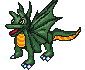
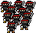
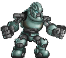
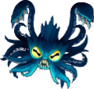
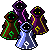
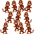
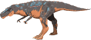
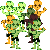
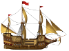

Credits
Credits Credits
Programming by Dennis Payne. Licensed under GPL.
Map of Western States is derived from Wikimedia map. Licensed under Public Domain.
 by Carlos Alface on opengameart.org. Converted to a small png file. Licensed under CC-BY 3.0.
by Carlos Alface on opengameart.org. Converted to a small png file. Licensed under CC-BY 3.0.
 by Tracy on opengameart.org. Licensed under CC-BY 3.0
 by DezrasDragons on opengameart.org. Copied image multiple times to make a band of ninja. Licensed under Public Domain.
 by wuhu on opengameart.org. Scaled the image down some. Licensed under Public Domain.
 Concept art and vector by Chris Hildenbrand. Painting by Nathan Lovato on opengameart.org. Scaled down the image. Licensed under CC-BY 4.0.
 by wolfgang wozniak on opengameart.org. Multiple wizards put into a single image. Licensed under CC-BY 3.0.
 by dannorder on opengameart.org. Copied multiple times to make a band of monkeys. Licensed under Public Domain.
 based on Major Triumph by Baŝto on opengameart.org. All supervillains have altered colors and modification to uniform. The mohawk hair comes from the LPC base assets.
based on Major Triumph by Baŝto on opengameart.org. All supervillains have altered colors and modification to uniform. The mohawk hair comes from the LPC base assets.
Copyright/Attribution Notice: "Major Triumph's shield based on shield by
Johannes Sjölund (AKA wulax) Major Triumph's belt based on leather belt by
Johannes Sjölund (AKA wulax) red bracers based on bracers by Johannes Sjölund
(AKA wulax) and Matthew Krohn red bracers based on bracers by Johannes Sjölund
(AKA wulax) and Matthew Krohn red shoes based on brown shoes by Johannes
Sjölund (AKA wulax) and Joe White Major Triumph's mask and suit are based on
male body with base animations by Johannes Sjölund (AKA wulax) and Stephen
Challener (AKA Redshrike) black hero pants based on white pants by Johannes
Sjölund (AKA wulax)"
Licensed under CC-BY-SA 3.0.
 by richtaur on opengameart.org. Scaled the image down. Licensed under CC-BY 3.0.
 by Dennis Payne. The design is inspired by eelhovercraft's zombie. Licensed under CC-BY-SA 3.0.
 by KokoroReflections on opengameart.org. Scaled down the image. Licensed under CC-BY 4.0.
{kind=link}